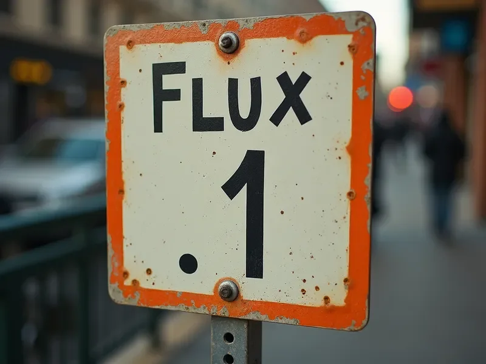
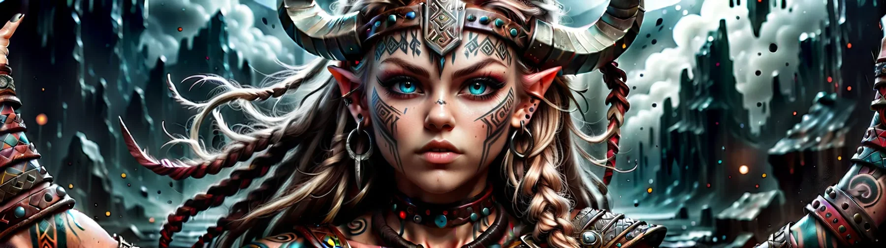

checkpoint
Release detailsFlux.1 collection
Expressive realism and material studies.
Experiments in photographic texture, impossible materials, and the space between them.

4 entries shown

Expressive realism and material studies.
Compositions made for the edges of the frame.

A study in water, skin, and painterly light.
A deliberate finishing pass for your images.
Example version notes. Replace these with the files, license and tested settings of your own release.
Demo: balanced composition, refined highlights, and a quieter treatment of fine texture.
Pick a clear subject, a material and a source of light. Change one variable at a time so you can tell what made the difference.
Each model has different requirements. These are demo release cards; add your own verified requirements and actual download links before publishing.